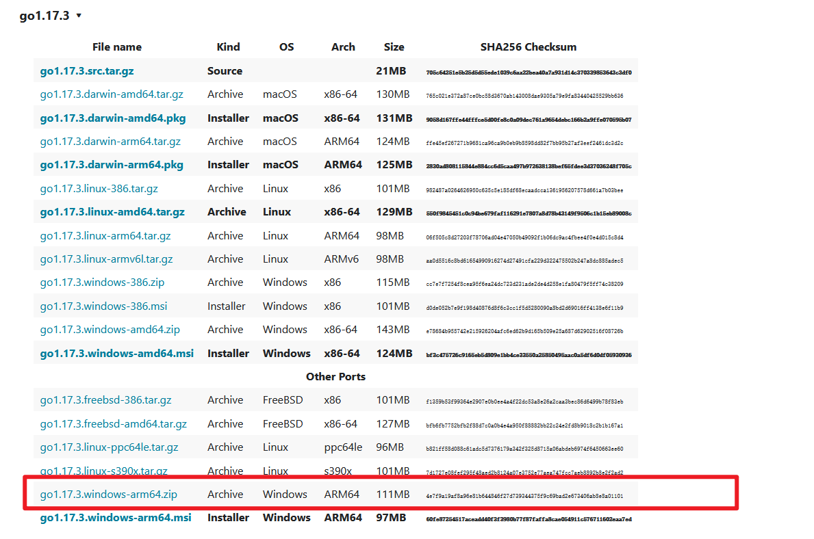

About Me
关于我
Home
主页
Blogs
博客
Projects
项目
Papers
论文
Learning Notes
学习笔记
Overview
golang
Categories
All
(14)
环境搭建
(2)
golang
(14)
golang基础学习
(12)
golang
记录一下golang学习过程中的笔记.
go的版本管理工具-g的安装和使用
golang
环境搭建
最近在进行go的实践，要做go的项目，运行一些项目的时候可能要用到不同的go环境，想到go有没有和python一样的环境管理工具（做实验还是用python比较多），然后查了一下，还是有的，比如gvm、g等等，最终选择了g，感觉找到的博客不够“保姆”就自己写一遍，进行记录，供小白参考。
Jan 16, 2025
golang学习记录（13）
golang
golang基础学习
go test命令是一个按照一定约定和组织的测试代码驱动程序
Oct 20, 2024
golang学习记录（12）
golang
golang基础学习
在go中，package是一个非常重要的概念，它是go语言中的一个基本单位，它可以包含多个.go文件，每个.go文件都必须属于一个package，这也是代码复用的基础，其中fmt、os、io等都是一个包
Oct 20, 2024
golang学习记录（11）
golang
golang基础学习
go语言中interface是一种非常重要的类型，是非常重要的组成部分
Oct 20, 2024
golang学习记录（10）
golang
golang基础学习
指针是一个变量，其值为另一个变量的地址，即，内存地址。
Oct 20, 2024
golang学习记录（9）
golang
golang基础学习
type关键字常用于
Oct 19, 2024
golang学习记录（8）
golang
golang基础学习
go语言中的函数支持普通函数、匿名函数、闭包函数、方法等
Oct 18, 2024
golang学习记录（7）
golang
golang基础学习
数组的定义： var name [length] type
Oct 17, 2024
golang学习记录（6）
golang
golang基础学习
个其他语言差不多，go中if语句后面的条件判断可以加括号，也可以不加，通常不写括号，但是如果条件比较复杂，建议加上括号。
Oct 16, 2024
golang学习记录（5）
golang
golang基础学习
通常在各种语言中转义符都是同一个：，千万不要写反
Oct 14, 2024
golang学习记录（4）
golang
golang基础学习
go的基础数据类型有bool、string、int、float、byte、rune、uint、int8、int16、int32、int64、uint8、uint16、uint32、uint64、float32、float64等
Oct 13, 2024
golang学习记录（3）
golang
golang基础学习
go是一种静态语言，变量的类型是在编译阶段确定的。 > 变量必须先定义后使用 > > 变量必须要有类型 > > 变量类型定下来后不能改变
Sep 29, 2024
golang学习记录（2）
golang
golang基础学习
首先要创建golang开发的目录，可以创建成下面的形式 > go_project > - src > * go_code > * project01 > * main > * hello.go > * package > * project02 > * main > * package
Sep 23, 2024

golang学习记录（1）-在win搭建go环境
golang
环境搭建
SDK（Soft Development Kit, 软件开发工具包）：是一套工具得集合，方便开发者在特定的编程语言环境下进行开发
Sep 16, 2024
No matching items